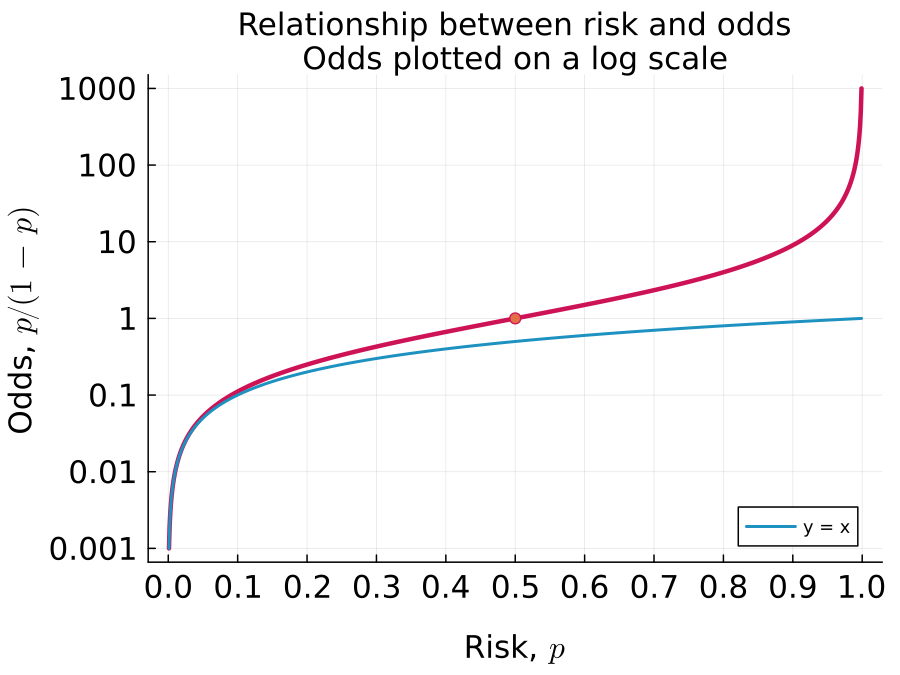
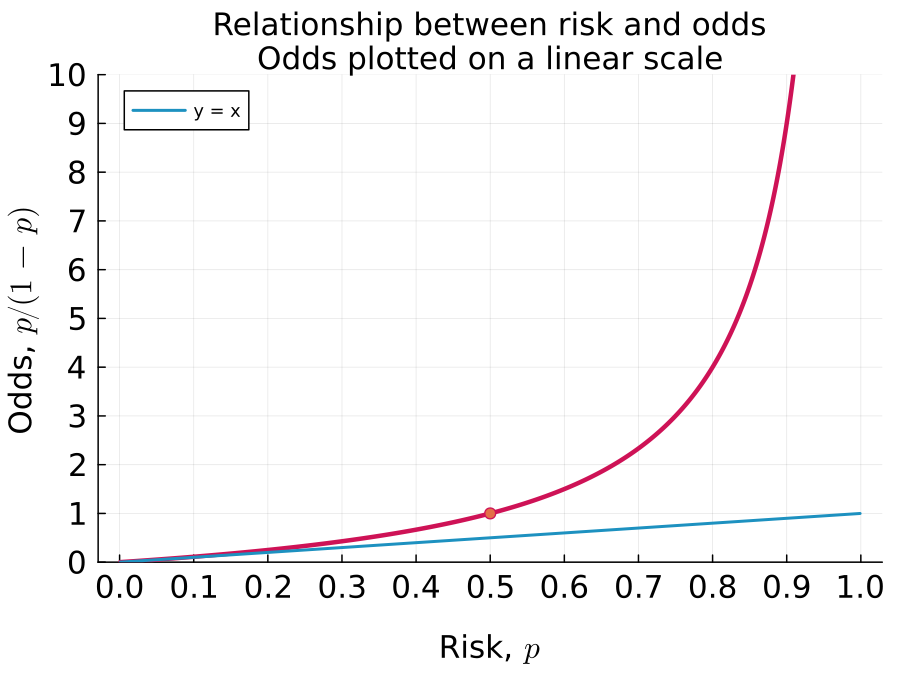
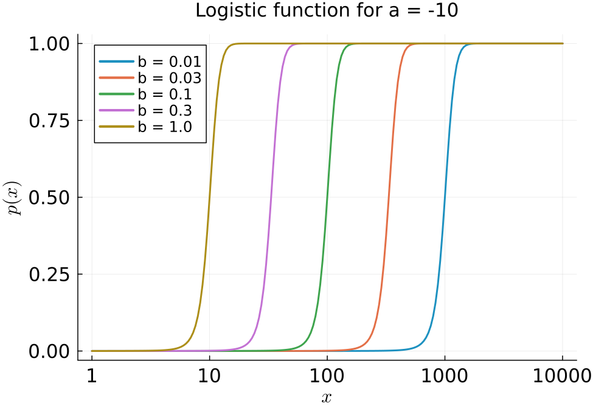

Odds explained graphically
April 15, 2023
This post uses some simple plots to explain the concept of odds and how it is related to risk, or the probability of an event.
Odds versus risk #
Risk and odds are two alternate ways of representing the probability of an event. The risk of an event, such as, winning the toss of a fair coin, or getting diagnosed with cancer in one’s lifetime is another name for the probability of that event. The odds of an event with probability $p$ is the risk of that event relative to the risk of it not happening: $$ {\text{odds }} = \frac{p}{1 - p} = \frac{\text{risk}}{1 - \text{risk}} $$
The inverse relationship is: $$ \text{risk } = p = \frac{\text{odds}}{1 + \text{odds}} $$
This plot shows the relationship between odds and risk (red curve) 
The table on the right lists odds for some select probabilities. It is typical to write odds as a fraction, such as 1:10.
The plot above highlights two key points:
- Odds and risk are nearly equal to each other for events with a low probability, i.e. when $p \approx 0$. Visually, this is where the red odds -vs- risk curve overlaps with the blue $y = x$ curve.
| Risk, $p$ | Odds, $p/(1 - p)$ | Description |
|---|---|---|
| 0.009 | 1/100 = 0.01 | 100:1 against |
| 0.09 | 1/10 = 0.1 | 10:1 against |
| 0.5 | 1/1 = 1 | Equal odds |
| 0.91 | 10/1 = 10 | 10:1 for |
| 0.991 | 100/1 = 100 | 100:1 for |
- When plotted on a log scale, the odds curve has a symmetric shape about $p = 0.5$. This symmetric shape arises because replacing $p$ with $1-p$ is equivalent to switching the numerator and denominator in the definition of odds. For example, the odds flip from from 10:1 to 1:10 if the risk changes from 0.09 to 1 - 0.09 = 0.91. This behavior is not obvious with odds plotted on a linear scale as seen below:

Application of odds #
There are two common applications of odds in analyzing biological data:
- To estimate an odds ratio to determine the strength of association between two binary variables - for example, smoking and getting lung cancer.
- As the response variable in logistic regression which relates a continuous variable, such as the dose of a drug, on a binary response variable, such as disease-free survival. The relationship is modeled as:
$$ \log(\text{odds }) = a + b \cdot \text{dose } $$ Using the relationship between odds and probability, this can be transformed to:
$$\begin{aligned} \frac{p}{1 - p} & = \exp\left(a + b \cdot \text{dose }\right) \\ p & = \frac{ \exp\left(a + b \cdot \text{dose }\right) }{1 + \exp\left(a + b \cdot \text{dose }\right) } \\ & = \frac{1}{1 + \exp\left[ -\left(a + b \cdot \text{dose } \right) \right] } \end{aligned}$$ which is the logistic function. The figure below shows plots of the logistic function for a fixed $a$ and different values of $b$. The EC$_{50}$ of the response is at $x = -a/b$, which shifts to the left as $b$ increases.

Summary #
Odds are an alternate way of representing the probability or risk of an event. For low probability events ($p \approx 0$), odds is approximately the same as the probability $p/(1 - p) \approx p$. But while probability can only range between 0 and 1, odds can take on any value between 0 and $\infty$. Log odds can therefore range between $-\infty$ and $\infty$. This makes it convenient to relate log odds for a binary event, such as responding to a drug or not, to a continuous variable, such as dose. This idea lies behind a logistic regression model.